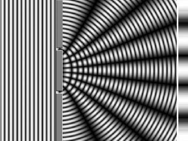
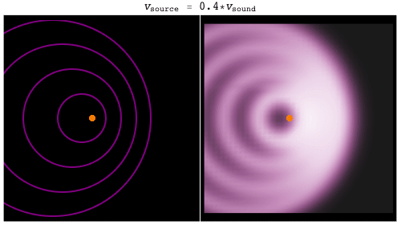
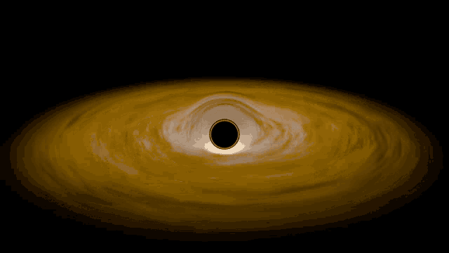

bySarah HoweforStephen HawkingA poem about physics
When we wake up brushed by panic in the dark,
our
pupils
Meaning: a part of your eyes
grope for the shape of things we know.
Photons loosed from
slits
Refers to Double-slit experiment, a demonstration that light and matter can display characteristics of both classically defined waves and particles; like greyhounds at the track,
reveal light’s doubleness
in their cast shadows that stripe a dimmed lab’s wall.

—particles no more—
Refers to the wave-particle duality, a concept in quantum mechanics that every particle or quantum entity may be described as either a particle or a wave.
and with a wave
bid all certainties goodbye.
For what’s sure in a universe
that
dopplers
Refers to dopper effect,the change in frequency of a wave in relation to an observer who is moving relative to the wave source.
away like a siren’s midnight cry?

They say
a flash seen from on and off a hurtling train
will explain why
time dilates
Refers to TIME DILATION, the difference in the elapsed time as measured by two clocks. It is a consequence of Einstein's theory of relativity.
like a perfect afternoon;
predicts black holes where parallel lines will meet,
whose stark horizon, even starlight, bent in its tracks, can’t resist.
If we can think this far, might not our eyes adjust to the dark?

 For what’s sure in a universe
For what’s sure in a universe predicts black holes where parallel lines will meet,
predicts black holes where parallel lines will meet,